深入理解TCP协议
本文为掘金小测笔记。在原文的 基础上有些东西进行了展开。
目前 TCP/IP 协议可以说是名气最大、使用最广泛的计算机网络，从这篇文章来会讲解 TCP 协议的历史和分层模型。将分以下两个部分
- TCP/IP 协议产生的历史背景
- TCP/IP 协议的分层模型
接下来我们来讲讲 TCP/IP 协议的历史。
TCP/IP历史与分层模型
TCP/IP 协议产生的历史背景
时间回退到 1969 年，当时的 Internet 还是一个美国国防部高级研究计划局（Advanced Research Projects Agency，ARPA）研究的非常小的网络，被称为 ARPANET（Advanced Research Project Agency Network）。
比较流行的说法是美国担心敌人会摧毁他们的通信网络，于是下决心要建立一个高可用的网络，即使部分线路或者交换机的故障不会导致整个网络的瘫痪。于是 ARPA 建立了著名的 ARPANET。
ARPANET 最早只是一个单个的分组交换网，后来发展成为了多个网络的互联技术，促成了互联网的出现。现代计算机网络的很多理念都来自 ARPANET，1983 年 TCP/IP 协议成为 ARPANET 上的标准协议，使得所有使用 TCP/IP 协议的计算机都能互联，因此人们把 1983 年当做互联网诞生的元年。
从字面上来看，很多人会认为 TCP/IP 是 TCP、IP 这两种协议，实际上TCP/IP 协议族指的是在 IP 协议通信过程中用到的协议的统称
TCP/IP 网络分层
记得在学习计算机网络课程的时候，一上来就开始讲分层模型了，当时死记硬背的各个层的名字很快就忘光了，不明白到底分层有什么用。纵观计算机和分布式系统，你会发现「计算机的问题都可以通过增加一个虚拟层来解决，如果不行，那就两个」
下面用 wireshark 抓包的方式来开始看网络分层。
打开 wireshark，在弹出的选项中，选中 en0 网卡，在过滤器中输入host www.baidu.com，只抓取与百度服务器通信的数据包。
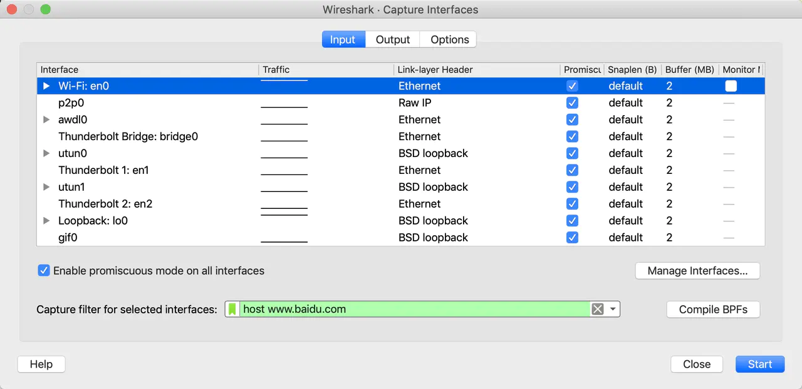
在命令行中用 curl 命令发起 http 请求：curl http://www.baidu.com，抓到的中间一次数据包如下
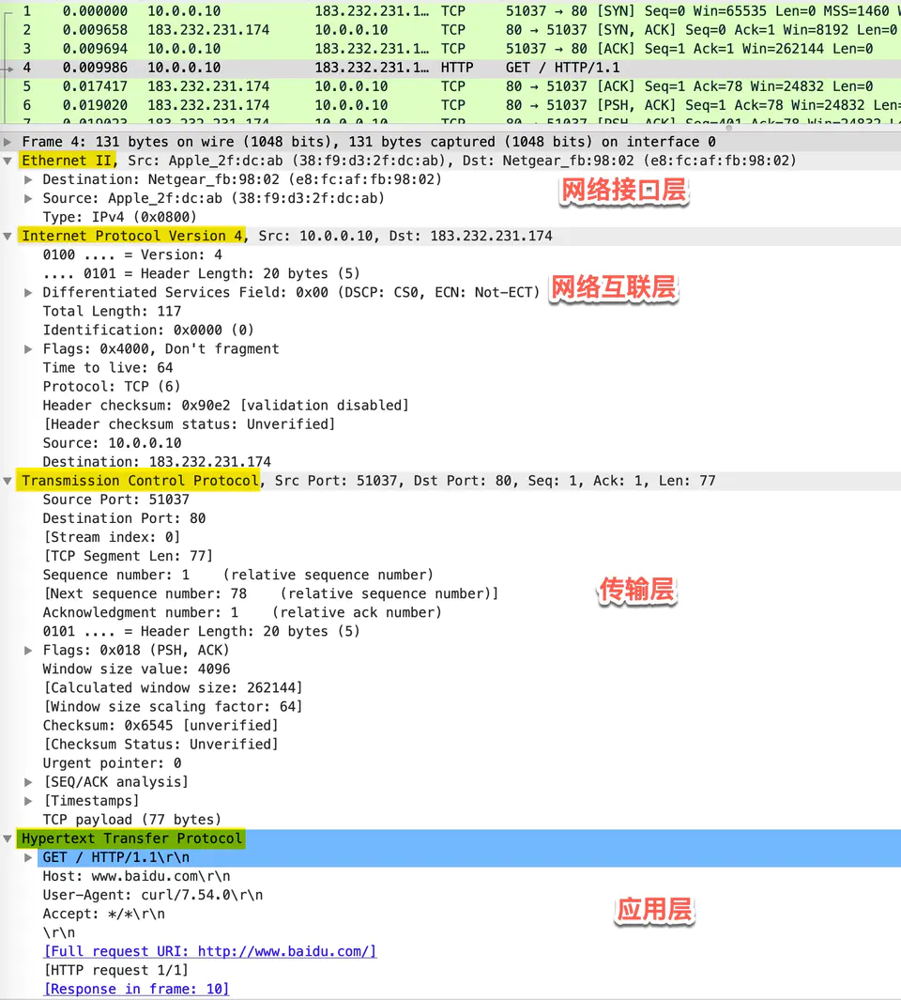
可以看到协议的分层从上往下依次是
- Ethernet II：网络接口层以太网帧头部信息
- Internet Protocol Version 4：互联网层 IP 包头部信息
- Transmission Control Protocol：传输层的数据段头部信息，此处是 TCP 协议
- Hypertext Transfer Protocol：应用层 HTTP 的信息
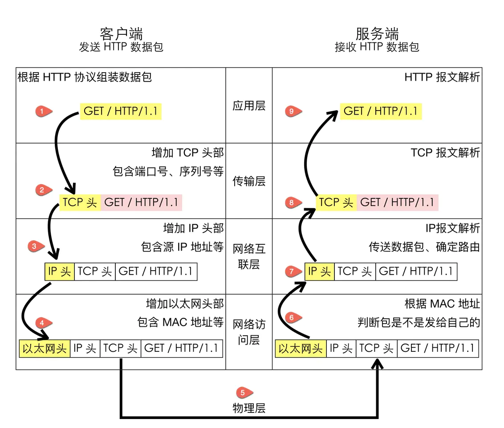
应用层（Application Layer）
应用层的本质是规定了应用程序之间如何相互传递报文， 以 HTTP 协议为例，它规定了
- 报文的类型，是请求报文还是响应报文
- 报文的语法，报文分为几段，各段是什么含义、用什么分隔，每个部分的每个字段什么什么含义
- 进程应该以什么样的时序发送报文和处理响应报文
很多应用层协议都是由 RFC 文档定义，比如 HTTP 的 RFC 为 RFC 2616 - Hypertext Transfer Protocol – HTTP/1.1。
HTTP 客户端和 HTTP 服务端的首要工作就是根据 HTTP 协议的标准组装和解析 HTTP 数据包，每个 HTTP 报文格式由三部分组成：
- 起始行（start line），起始行根据是请求报文还是响应报文分为「请求行」和「响应行」。这个例子中起始行是
GET / HTTP/1.1，表示这是一个GET请求，请求的 URL 为/，协议版本为HTTP 1.1，起始行最后会有一个空行CRLF（\r\n)与下面的首部分隔开 - 首部（header），首部采用形如
key:value的方式，比如常见的User-Agent、ETag、Content-Length都属于 HTTP 首部，每个首部直接也是用空行分隔 - 可选的实体（entity），实体是 HTTP 真正要传输的内容，比如下载一个图片文件，传输的一段 HTML等
以本例的请求报文格式为例
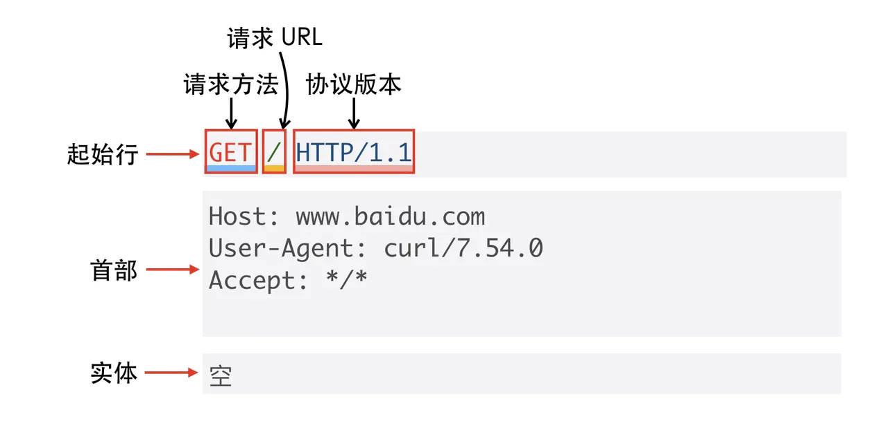
除了我们熟知的 HTTP 协议，还有下面这些非常常用的应用层协议
- 域名解析协议 DNS
- 收发邮件 SMTP 和 POP3 协议
- 时钟同步协议 NTP
- 网络文件共享协议 NFS
传输层（Transport Layer）
传输层的作用是为两台主机之间的「应用进程」提供端到端的逻辑通信，相隔几千公里的两台主机的进程就好像在直接通信一样。
虽然是叫传输层，但是并不是将数据包从一台主机传送到另一台，而是对「传输行为进行控制」，这本小册介绍的主要内容 TCP 协议就被称为传输控制协议（Transmission Control Protocol），为下面两层协议提供数据包的重传、流量控制、拥塞控制等。
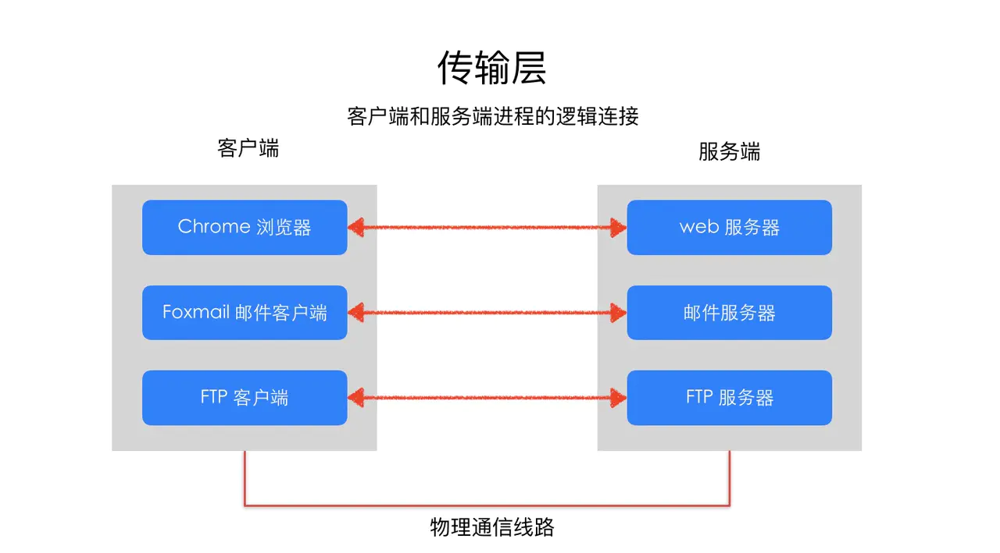
假设你正在电脑上用微信跟女朋友聊天，用 QQ 跟技术大佬们讨论技术细节，当电脑收到一个数据包时，它怎么知道这是一条微信的聊天内容，还是一条 QQ 的消息呢？
这就是端口号的作用。传输层用端口号来标识不同的应用程序，主机收到数据包以后根据目标端口号将数据包传递给对应的应用程序进行处理。比如这个例子中，目标端口号为 80，百度的服务器就根据这个目标端口号将请求交给监听 80 端口的应用程序（可能是 Nginx 等负载均衡器）处理
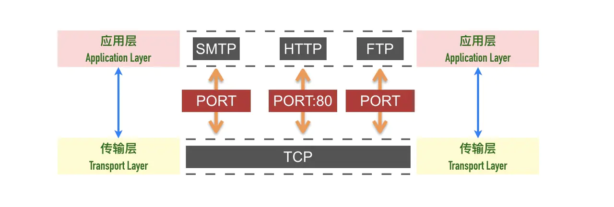
网络层/网络互连层（Internet Layer）
网络互连层提供了主机到主机的通信，将传输层产生的的数据包封装成分组数据包发送到目标主机，并提供路由选择的能力
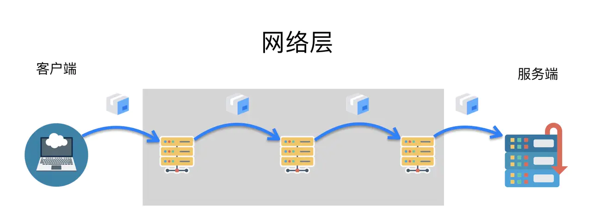
IP 协议是网络层的主要协议，TCP 和 UDP 都是用 IP 协议作为网络层协议。这一层的主要作用是给包加上源地址和目标地址，将数据包传送到目标地址。
IP 协议是一个无连接的协议，也不具备重发机制，这也是 TCP 协议复杂的原因之一就是基于了这样一个「不靠谱」的协议。
数据链路层/网络访问层（Network Access Layer）
网络访问层也有说法叫做网络接口层，以太网、Wifi、蓝牙工作在这一层，网络访问层提供了主机连接到物理网络需要的硬件和相关的协议。这一层我们不做重点讨论。
整体的分层图如下图所示
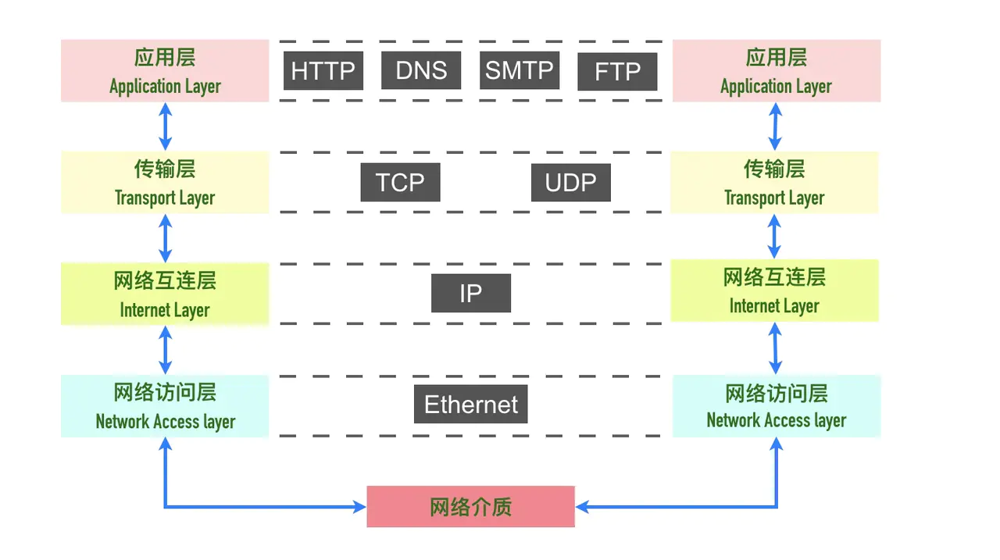
网络互连层（网络层）
网络访问层 （数据链路层）

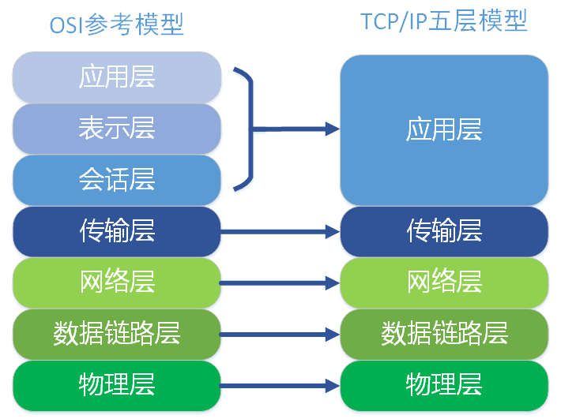
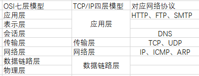
分层的好处是什么呢？
分层的本质是通过分离关注点而让复杂问题简单化，通过分层可以做到：
- 各层独立：限制了依赖关系的范围，各层之间使用标准化的接口，各层不需要知道上下层是如何工作的，增加或者修改一个应用层协议不会影响传输层协议
- 灵活性更好：比如路由器不需要应用层和传输层，分层以后路由器就可以只用加载更少的几个协议层
- 易于测试和维护：提高了可测试性，可以独立的测试特定层，某一层有了更好的实现可以整体替换掉
- 能促进标准化：每一层职责清楚，方便进行标准化
习题
- 收到 IP 数据包解析以后，它怎么知道这个分组应该投递到上层的哪一个协议（UDP 或 TCP）
答： IP报文头中有两个字节( protocol )用于表示传输层使用的协议类型（TCP还是UDP）
TCP
如果要用一句话来描述 TCP 协议，我想应该是：TCP 是一个可靠的（reliable）、面向连接的（connection-oriented）、基于字节流（byte-stream）、全双工的（full-duplex）协议。
TCP 是面向连接的协议
一开始学习 TCP 的时候，我们就被告知 TCP 是面向连接的协议，那什么是面向连接，什么是无连接呢？
- 面向连接（connection-oriented）：面向连接的协议要求正式发送数据之前需要通过「握手」建立一个逻辑连接，结束通信时也是通过有序的四次挥手来断开连接。
- 无连接（connectionless）：无连接的协议则不需要
TCP三次握手，建立连接
建立连接的过程是通过「三次握手」来完成的，顾名思义，通过三次数据交换建立一个连接。 通过三次握手协商好双方后续通信的起始序列号、窗口缩放大小等信息。
如下图所示
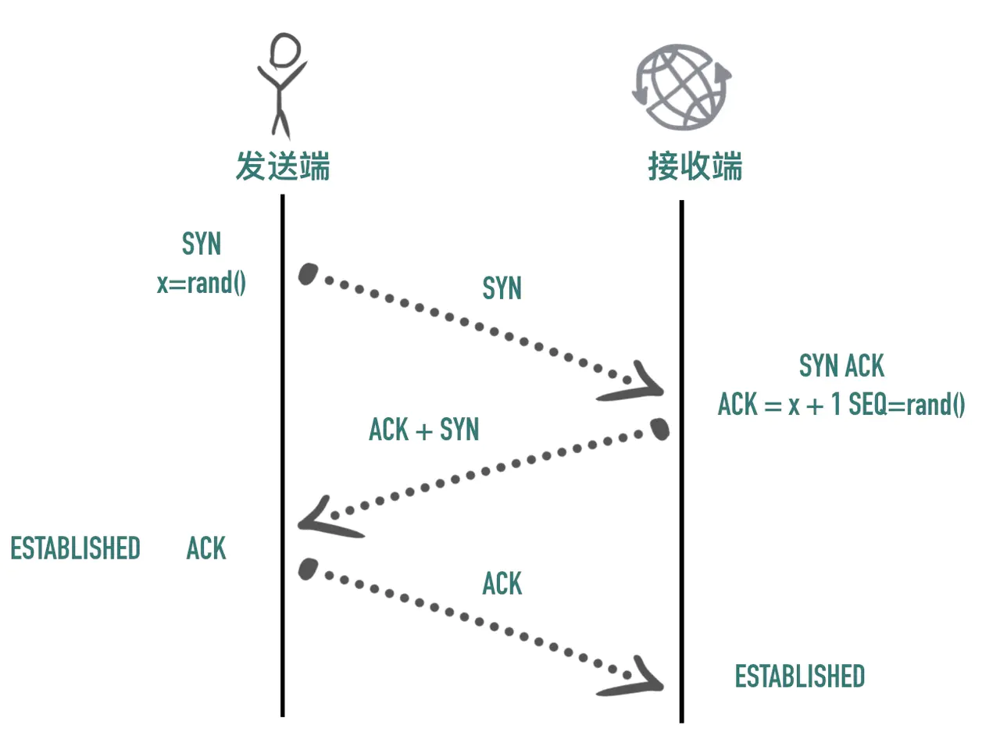
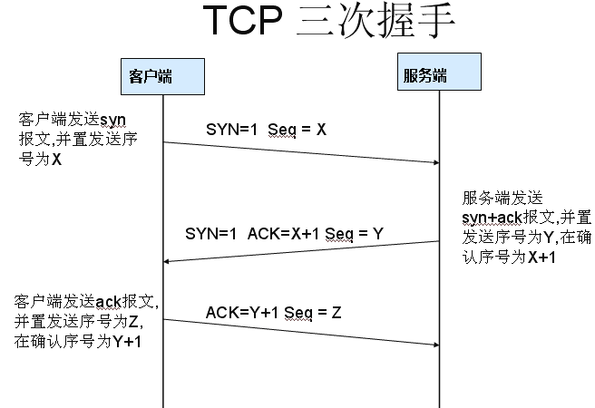
1：客户端发送了一个带有SYN的Tcp报文到服务器，这个三次握手中的开始。表示客户端想要和服务端建立连接。
2：服务端接收到客户端的请求，返回客户端报文，这个报文带有SYN和ACK标志，询问客户端是否准备好。
3：客户端再次响应服务端一个ACK，表示我已经准备好。
为什么不能一次握手很容易理解，TCP是面向连接的，一次握手肯定建立不了连接，一条信息发出去连个回信都没有怎么连接？
那么为什么要三次握手呢，有人说两次握手就好了。的确，为什么呢，这个可以从计算机网络中得到答案，举一个例子：已失效的连接请求报文段，
client发送了第一个连接的请求报文，但是由于网络不好，这个请求没有立即到达服务端，而是在某个网络节点中滞留了，直到某个时间才到达server，本来这已经是一个失效的报文，但是server端接收到这个请求报文后，还是会向client发出确认的报文，表示同意连接。假如不采用三次握手，那么只要server发出确认，新的建立就连接了，但其实这个请求是失效的请求，client是不会理睬server的确认信息，也不会向服务端发送确认的请求，但是server认为新的连接已经建立起来了，并一直等待client发来数据，这样，server的很多资源就没白白浪费掉了，采用三次握手就是为了防止这种情况的发生，server会因为收不到确认的报文，就知道client并没有建立连接。这就是三次握手的作用。
那三次握手为什么可以？两次握手的问题在于服务器端不知道一个SYN是否是无效的，而三次握手机制因为客户端会给服务器回复第二次握手，也意味着服务器会等待客户端的第三次握手，如果第三次握手迟迟不来，服务器便会认为这个SYN是无效的，释放相关资源。但这时有个问题就是客户端完成第二次握手便认为连接已建立，而第三次握手可能在传输中丢失，服务端会认为连接是无效的，这时如果Client端向Server写数据，Server端将以RST包响应，方能感知到Server的错误。
总的来说，三次握手可以保证任何一次握手出现问题，都是可以被发现或补救的
第一次握手A发送SYN传输失败，A,B都不会申请资源，连接失败。如果一段时间内发出多个SYN连接请求，那么A只会接受它最后发送的那个SYN的SYN+ACK回应，忽略其他回应全部回应，B中多申请的资源也会释放
第二次握手B发送SYN+ACK传输失败，A不会申请资源，B申请了资源，但收不到A的ACK，过一段时间释放资源。如果是收到了多个A的SYN请求，B都会回复SYN+ACK，但A只会承认其中它最早发送的那个SYN的回应，并回复最后一次握手的ACK
第三次握手ACK传输失败，B没有收到ACK，释放资源，对于后序的A的传输数据返回RST。实际上B会因为没有收到A的ACK会多次发送SYN+ACK，次数是可以设置的，如果最后还是没有收到A的ACK，则释放资源，对A的数据传输返回RST
终止协议，4次挥手
当终止协议的时候，tcp进行了4次握手，那这4次握手又是怎么回事呢？
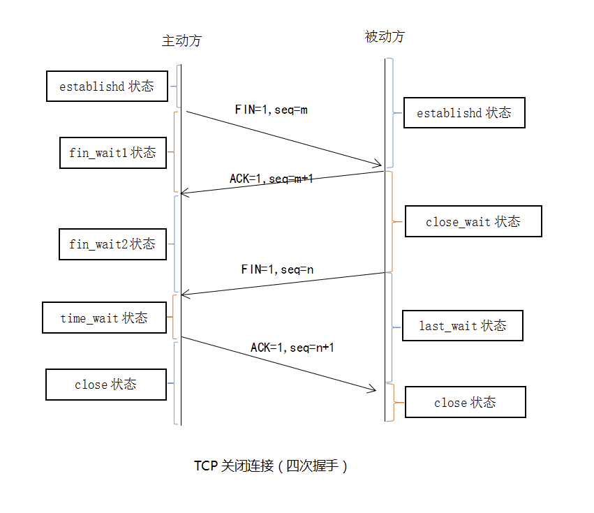
由于Tcp连接是进行全双工工作的，因此每个方向都必须单独进行关闭，这个原则是当一方完成他的数据发送的时候就发送一个FIN来终止这个方向的连接，收到这个FIN意味着这个方向上没有数据的流动，一个TCP连接在收到这个FIN之后还能发送消息，首先执行关闭的一方进行主动的关闭，而另一方进行被动的关闭。
1：客户端TCP发送一个FIN，用来关闭客户端到服务端的连接。
2：服务端收到这个FIN，他发回一个ACK，确认收到序号 为 收到序号+1，和SYN一样，一个FIN将占用一个序号。
3：服务端发送一个FIN到客户端，服务端关闭客户端的连接。
4：客户端发送ACK报文确认，并将确认的序号+1，这样关闭完成。
那么为什么是4次挥手呢？
可能有人会有疑问，tcp我握手的时候为何ACK和SYN是一起发送。挥手的时候为什么是分开的时候发送呢?
因为：当被动方(服务端)收到主动方(客户端)的FIN报文通知时，它仅仅表示主动方没有数据再发送给被动方了。
但未必被动方(服务端)所有的数据都完整的发送给了主动方，所以被动方不会马上关闭SOCKET,它可能还需要发送一些数据给主动方后再发送FIN报文给主动方，告诉主动方同意关闭连接，所以这里的ACK报文和FIN报文多数情况下都是分开发送的。
TCP 协议是可靠的
IP 是一种无连接、不可靠的协议：它尽最大可能将数据报从发送者传输给接收者，但并不保证包到达的顺序会与它们被传输的顺序一致，也不保证包是否重复，甚至都不保证包是否会达到接收者。
TCP 要想在 IP 基础上构建可靠的传输层协议，必须有一个复杂的机制来保障可靠性。 主要有下面几个方面：
- 对每个包提供校验和
- 包的序列号解决了接收数据的乱序、重复问题
- 超时重传
- 流量控制、拥塞控制
校验和（checksum） 每个 TCP 包首部中都有两字节用来表示校验和，防止在传输过程中有损坏。如果收到一个校验和有差错的报文，TCP 不会发送任何确认直接丢弃它，等待发送端重传。

包的序列号保证了接收数据的乱序和重复问题 假设我们往 TCP 套接字里写 3000 字节的数据导致 TCP发送了 3 个数据包，每个数据包大小为 1000 字节：第一个包序列号为[1~1001)，第二个包序列号为 [1001~2001)，第三个包序号为[2001~3001)
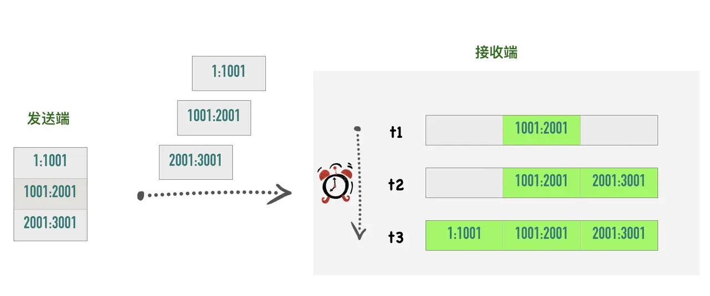
假如因为网络的原因导致第二个、第三个包先到接收端，第一个包最后才到，接收端也不会因为他们到达的顺序不一致把包弄错，TCP 会根据他们的序号进行重新的排列然后把结果传递给上层应用程序。
如果 TCP 接收到重复的数据，可能的原因是超时重传了两次但这个包并没有丢失，接收端会收到两次同样的数据，它能够根据包序号丢弃重复的数据。
超时重传 TCP 发送数据后会启动一个定时器，等待对端确认收到这个数据包。如果在指定的时间内没有收到 ACK 确认，就会重传数据包，然后等待更长时间，如果还没有收到就再重传，在多次重传仍然失败以后，TCP 会放弃这个包。后面我们讲到超时重传模块的时候会详细介绍这部分内容。
流量控制、拥塞控制 这部分内容较复杂，后面有专门的文章进行讲解，这里先不展开。
TCP 是面向字节流的协议
TCP 是一种字节流（byte-stream）协议，流的含义是没有固定的报文边界。
假设你调用 2 次 write 函数往 socket 里依次写 500 字节、800 字节。write 函数只是把字节拷贝到内核缓冲区，最终会以多少条报文发送出去是不确定的，如下图所示
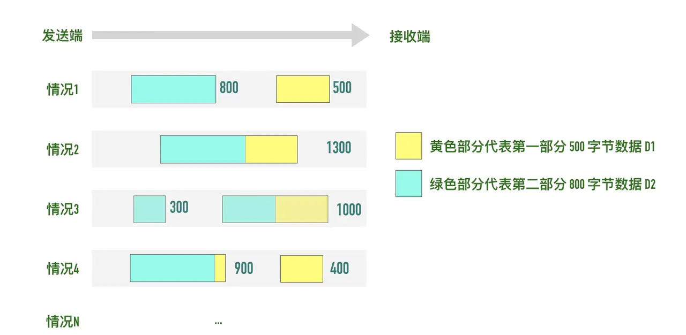
- 情况 1：分为两条报文依次发出去 500 字节 和 800 字节数据，也有
- 情况 2：两部分数据合并为一个长度为 1300 字节的报文，一次发送
- 情况 3：第一部分的 500 字节与第二部分的 500 字节合并为一个长度为 1000 字节的报文，第二部分剩下的 300 字节单独作为一个报文发送
- 情况 4：第一部分的 400 字节单独发送，剩下100字节与第二部分的 800 字节合并为一个 900 字节的包一起发送。
- 情况 N：还有更多可能的拆分组合
上面出现的情况取决于诸多因素：路径最大传输单元 MTU、发送窗口大小、拥塞窗口大小等。
当接收方从 TCP 套接字读数据时，它是没法得知对方每次写入的字节是多少的。接收端可能分2 次每次 650 字节读取，也有可能先分三次，一次 100 字节，一次 200 字节，一次 1000 字节进行读取。
所以才会有粘包和拆包的出现把？
TCP 是全双工的协议
在 TCP 中发送端和接收端可以是客户端/服务端，也可以是服务器/客户端，通信的双方在任意时刻既可以是接收数据也可以是发送数据，每个方向的数据流都独立管理序列号、滑动窗口大小、MSS 等信息。
总结：
TCP 是一个可靠的（reliable）、面向连接的（connection-oriented）、基于字节流（byte-stream）、全双工（full-duplex）的协议。发送端在发送数据以后启动一个定时器，如果超时没有收到对端确认会进行重传，接收端利用序列号对收到的包进行排序、丢弃重复数据，TCP 还提供了流量控制、拥塞控制等机制保证了稳定性。
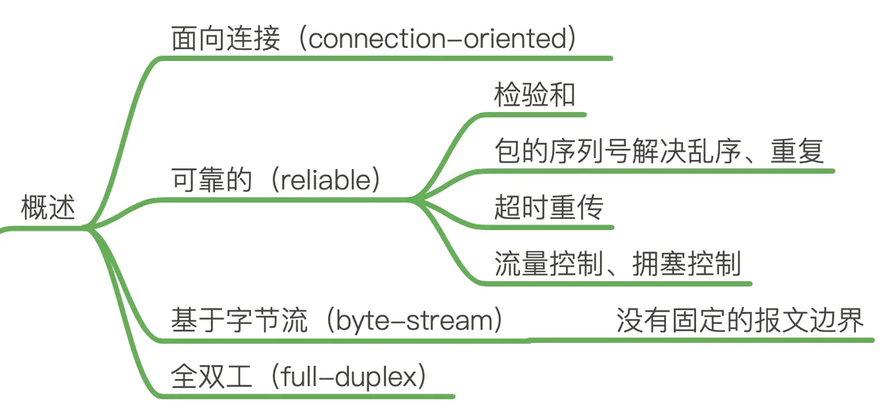
留一个思考题，这个题目也是《TCP/IP》详解中的一个习题。
TCP提供了一种字节流服务，而收发双方都不保持记录的边界，应用程序应该如何提供他们自己的记录标识呢？
应用程序自己控制消息边界，定义自己的消息分割符
应用程序的开发者自定义消息边界，例如 RPC 开发时常以「\r\n」作为消息边界符。
剖析TCP首部字段
This blog is under a CC BY-NC-SA 3.0 Unported License
本文链接：http://hogwartsrico.github.io/2020/07/15/TCP/